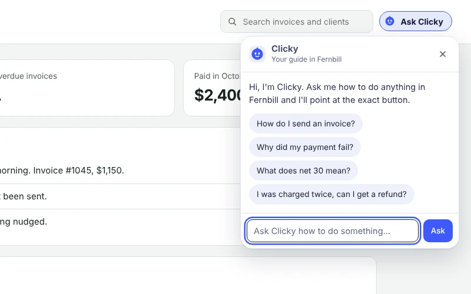
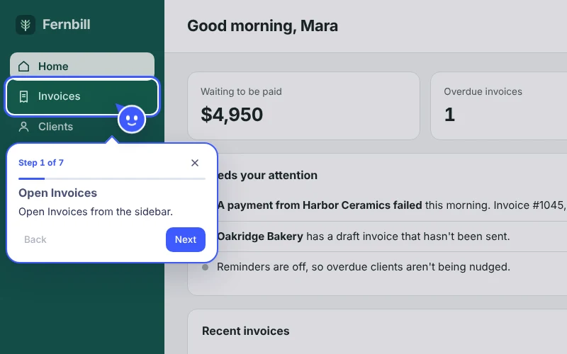
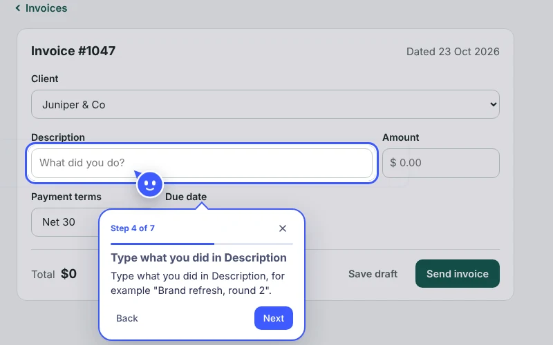
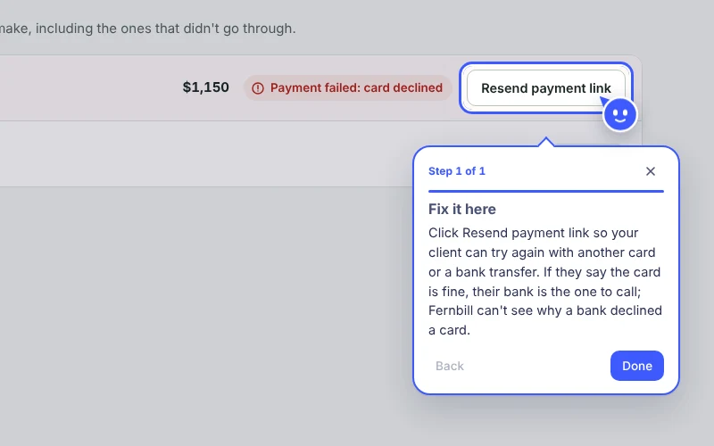
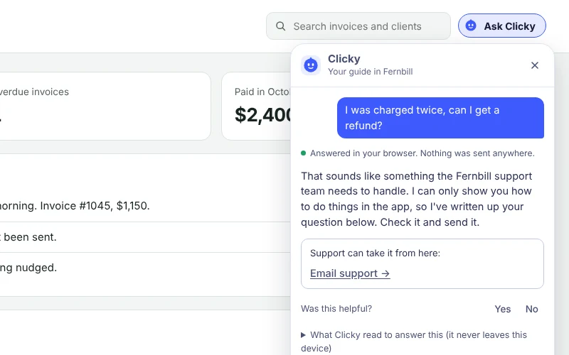
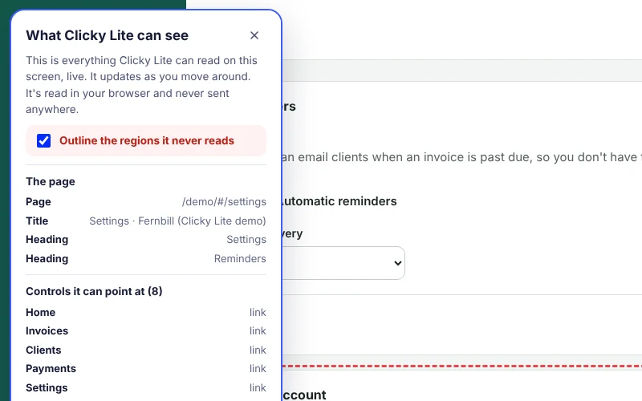

The case for Clicky Lite
Why a company that makes a Mac app should ship a script tag.
The problem
Clicky's value is locked behind an install. Clicky is great when you have it: it sees your screen, talks you through the tool and points at the button. But only people who find it, download a Mac app and grant screen access ever get there. That's a small, technical slice of the people who are stuck in software right now.
Meanwhile, SaaS teams drown in "how do I…" questions. A big share of support tickets for most web apps are questions the help center already answers. Customers don't read it, they don't find it, or they can't map "click Payment terms" onto the screen in front of them. Every one of those is a ticket, a slow onboarding, or a quiet churn.
The people who need Clicky most are the least likely to install it. The companies that serve them would pay to fix that.
Who it's for
The buyer: product-led SaaS teams
B2B web apps with self-serve signup, a help center, and a support or growth team that owns activation. Think invoicing, scheduling, CRM, HR and analytics tools with 5 to 50 core workflows. They already pay for chat widgets and product tours and are tired of maintaining tours that break on every redesign.
The user: their non-technical customers
The bookkeeper, the studio owner, the clinic manager. They live in a browser, they won't install anything, and they want the answer on the screen in front of them, not in a help article in another tab.
What we're building
A lightweight, web-only cousin of Clicky that lives inside someone else's product:
- One script tag and a knowledge pack built from the app's existing help docs. No server to run.
- An "Ask Clicky" button the app places where it likes, in its own brand colour.
- The buddy flies to the exact control and explains the step in a speech bubble.
- It moves on when the customer really does the step, and starts from wherever they already are.
- Errors on screen get explained ("why did my payment fail?") and the fix is pointed at.
- A finder, like real Clicky: "where is invoice 1045?", "take me to settings" or just "Harbor Ceramics" points at the thing on screen, or walks to the page it's on. It never looks inside blocked regions.
- It understands how people actually ask ("bill a client", "chase late payments", typos included), and offers the closest matches instead of a dead end.
- Anything it can't solve, like refunds or bugs, goes to the app's support email with the question prefilled.
The demo is built on the Navoro engine, Nitai's in-app guidance project, reskinned as Clicky Lite. It works today with no model at all: walkthroughs come straight from the docs, so the buddy never invents a button.
Why Clicky should build it
- Distribution
- Every web app that installs it becomes a surface. Millions of people meet Clicky, by name, inside tools they already use, without anyone asking them to install anything.
- A second revenue line
- Consumer subscriptions are one line. A per-app B2B plan, priced on monthly active users helped, is a second one that compounds with each customer's growth.
- Brand
- "Clicky" becomes the word for "show me where to click", the way people say "just Google it". Every Lite session ends with an easy route to the full desktop Clicky.
- A head start
- The hard part of Clicky, pointing at the right thing and teaching step by step, is exactly what in-app guidance tools do badly. Clicky already has the taste and the brand for it.
The flow, screen by screen

Ask. The customer opens Ask Clicky in the app's header and types, taps a suggestion, or speaks where the browser supports it. 
Point. The buddy flies to the first control. The speech bubble says what to do and how far along they are. 
Follow along. They click; it moves on. Picking a client moves it to Description. No Next button needed. 
Explain errors. "Why did my payment fail?" reads the error on screen, explains it from the docs and points at the fix. 
Hand off. Refunds, bugs and "talk to a person" go to support, with the question and page filled in for the customer to send. 
Show what it sees. A live list of what it can read here, with blocked regions outlined.
How we'd know it works
| Metric | What it tells us | Pilot target |
|---|---|---|
| Activation lift | New users who meet Clicky reach the app's "aha" action (first invoice sent) more often than a holdout group. | +10% relative |
| Tickets deflected | "How do I" tickets per 1,000 active users, before and after, against a holdout. | −25% |
| Walkthrough completion | Walkthroughs started that reach the last step. The core quality signal. | 60%+ |
| Pointing accuracy | Steps where the target was found and the user did that step next. | 95%+ |
| Lite to Clicky desktop | End users who click "Get Clicky for your Mac" and install. The distribution bet. | Track, no target yet |
Guardrails: no rise in support handoffs that customers rate unhelpful, and page load cost under 30 KB gzipped.
Risks and how we'd handle them
- Wrong pointing
- Pointing at the wrong button is worse than no answer. Steps only point at controls the app tagged or whose label matches exactly; if nothing matches, it says so instead of guessing. A CI check fails the build when a doc names a button that no longer exists.
- Privacy
- A guide that "sees your screen" inside someone else's product is a trust problem for two companies at once. Default to local, allowlist-first reading, built-in exclusions for payment and password fields, and the visible "what it can see" panel.
- Latency
- A guide that takes three seconds feels broken. Local mode answers in milliseconds. If we add a model for fuzzy questions, it only chooses among known walkthroughs, and the instant docs answer shows first.
- Brand dilution
- A cheaper Clicky inside a clunky app could make Clicky look clunky. Keep the buddy and its voice consistent across hosts, cap how far hosts can restyle it, and vet early partners.
- Cannibalisation
- If Lite is good enough, why buy desktop Clicky? They solve different jobs: Lite helps in one app; Clicky helps across your whole Mac and runs agents. Lite should be the trailer, not the film.
Rollout
- Dogfood. Install it on Clicky's own web surfaces (account, billing, docs). Fix pointing until completion is over 60%.
- Design partners. Five to ten PLG SaaS apps with good help centers, free for a quarter in exchange for holdout data on activation and tickets.
- Self-serve beta. Public docs, a pack builder in the browser, a usage dashboard and a free tier capped by monthly active users.
- Paid plans and the bridge. Per-app pricing, hosted packs that update from the help center automatically, and the "Get Clicky for your Mac" link turned on.
Deliberately out of scope
- Agents or automation that act for the user. Lite never clicks, types or submits. Acting inside another company's app needs its own consent and security design.
- Voice on day one, unless it's reliable. The demo offers a mic only where the browser can recognise speech, and otherwise stays text. Talking back out loud can wait.
- Screenshots or pixel vision. It reads labels the app allows, not images of the screen.
- Mobile apps. Web first. Native SDKs come after the web wedge proves out.
- Replacing support. It hands off; it doesn't pretend to be a person.